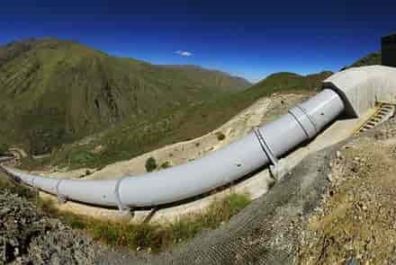
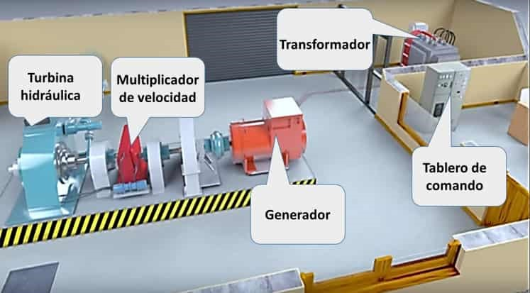
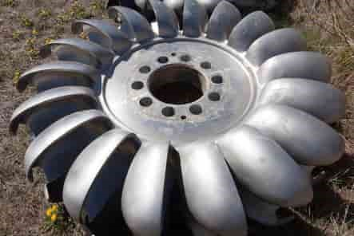
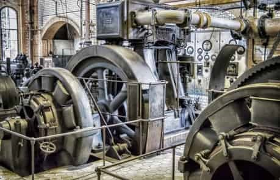
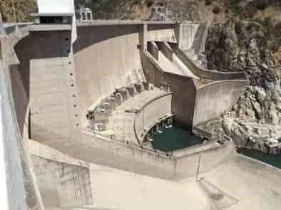
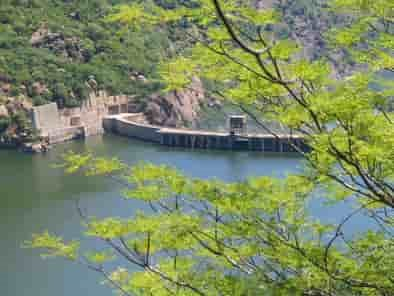

Partes principales de una central hidroeléctrica
Cuando nos referimos a las partes principales, estamos hablando de aquellos componentes que cumplen una función indispensable para la generación de electricidad.
1. Toma de agua
La toma de agua es una parte de la central hidroeléctrica, en este contexto es el punto donde el agua ingresa al conducto (generalmente tuberías forzadas) y posteriormente será dirigida a la casa de máquinas, otro componente que veremos más adelante.
La toma de agua es un punto que todas las centrales hidroeléctricas poseen, sea del tipo que sea, pues todas necesitan agua para cumplir con su objetivo.
Hay que aclarar que no debemos confundir el embalse o represa con la toma de agua, ya que estos (Embalses) son componentes que se presentan en centrales de embalse.
2. Tubería forzada
La tubería forzada o de presión en una central hidroeléctrica, es la tubería que conduce el agua por donde sea necesario hasta la casa de máquinas, específicamente para impulsar las turbinas hidráulicas.

Imagen de tubería forzada
Nota: Partes y componentes de una central hidroeléctrica. (2019) por www.deingenierías.com
Las tuberías forzadas están diseñadas para soportar grandes cargas de presión y reducir al mínimo las pérdidas de energía durante el trayecto, de esta manera la turbina aprovechará la energía del agua para girar a elevadas velocidades. Estas tuberías dependiendo del contexto, pueden ser subterráneas o externas.
Las construcciones de las tuberías forzadas para centrales hidroeléctricas generalmente son en materiales metálicos de acero, concreto armado y otros componentes.
3. La casa de máquinas
La casa de máquinas es donde realmente se transforma la energía del agua en electricidad, en ese proceso participan otros elementos muy importantes, tales como la turbina, el multiplicador de velocidad, el generador, transformador y otros.

Nota: Partes y componentes de una central hidroeléctrica. (2019) por www.deingenierías.com
4. Turbina hidráulica
Las turbinas hidráulicas son máquinas compuestas básicamente en este caso de un conjunto de alabes, llamadas también cucharas o palas que están unidas al eje giratorio de la turbina, estas palas son las encargadas de recibir sobre ellas, la fuerte presión del agua, de esta manera hacen girar al eje de la turbina; este movimiento de rotación será posteriormente transmitida al generador eléctrico.

Nota: Partes y componentes de una central hidroeléctrica. (2019) por www.deingenierías.com
Las turbinas hidráulicas que no alteran la presión del agua, cuando esta pasa por sus alabes, es un tipo de turbina de acción, en caso cambie la presión del agua, será una turbina de reacción.
Las principales partes de una turbina hidráulica son el rodete y las palas; el rodete es el componente donde van unidas las palas en forma muy ordenada y cumpliendo las mejores prácticas de ingeniera.
Por otro lado, existen varios tipos de turbinas que pueden ser implementadas en una central hidroeléctrica, esto dependerá de las características de salto de agua, las presiones a soportar y entre otros paramentos. Los tipos de turbinas hidráulicas más conocidos son: Pelton, Francis y Kaplan.
5. Generador eléctrico
El generador eléctrico es un componente indispensable para el funcionamiento de una central hidroeléctrica, por una sencilla razón: sin el generador eléctrico no es posible generar energía eléctrica dentro de una central hidroeléctrica; ¡Venga ya! es posible que exista un método que no necesite generador eléctrico, pero en el contexto actual, las centrales hidroeléctricas emplean al generador para transformar la energía mecánica de rotación de la turbina en generar energía eléctrica.
Nota: Partes y componentes de una central hidroeléctrica. (2019) por www.deingenierías.com
El generador eléctrico posee componentes como el rotor y estator, mediante la rotación son capaces de producir fuerza electromotriz, es así como se genera energía eléctrica que puede ser transmitida y distribuida.
6. Transformadores en centrales hidroeléctricas
Los transformadores son equipos que transforman la electricidad producida por el generador; un transformador puede elevar o disminuir la fuerza electromotriz que recibe, en el caso de que eleve se tratará de un transformador amplificador y en caso de que reduzca se denominará como transformador reductor.
En una central hidroeléctrica es utilizado generalmente para ampliar el voltaje o fuerza electromotriz que se genera en el generador eléctrico; pero ¿Por qué amplifica? Desde el simple hecho de obtener mayor fuerza eléctrica, hasta compensar las pérdidas de fuerza durante la transición a largas distancias, un transformador eléctrico es imprescindible para poder llevar energía eléctrica desde las centrales hasta sus respectivos objetivos, ciudades, viviendas e industrias.
El transformador es un equipo compuesto por bobinas devanadas sobre un núcleo en forma cerrada, además de material ferromagnético como por ejemplo el hierro.
7.Líneas eléctricas
Se refiere a las líneas de transmisión eléctrica que hacen posible la transición de energía eléctrica. Los cables de alta tensión, las torres, la red y otros equipos forman parte de alguna manera en la tarea de transmisión y distribución eléctrica.
Otros constituyentes de centrales hidroeléctricas
Las centrales hidroeléctricas pueden estar compuestos por otros componentes adicionales pero necesario en muchos casos y en otros pueden ser sustituidos, esto dependerá del tipo de central hidroeléctrica; por ejemplo, se puede tratar de una central de bombeo, al aire libre, en caverna, etc., pero, en fin, a continuación, conozcamos más elementos involucrados en la generación de energía eléctrica.
Presa o represa hidroeléctrica
La presa o represa hidráulica es la estructura cuya función principal es la de retener y almacenar grandes cantidades de agua; las represas están diseñadas para soportar altas presiones y se pueden construir de cemento, concreto armado o materiales que sean capaces de cumplir con la tarea de almacenar agua.
Nota: Partes y componentes de una central hidroeléctrica. (2019) por www.deingenierías.com
El diseño de una represa se hace de acuerdo a las condiciones en las que será construido, la cantidad de agua que almacenará y entre otros factores.
Embalse
El embalse básicamente es el depósito de agua propiamente, de acuerdo a las especificaciones y circunstancias puede ser necesario la remoción de grandes cantidades de tierra o la inundación de áreas extensas.
Nota: Partes y componentes de una central hidroeléctrica. (2019) por www.deingenierías.com
Los embalses pueden servir para otras actividades como la recreativa, pesca, navegación, riego en agricultura y más.
Por otro lado, cabe señalar que la construcción de embalses, dependiendo de sus dimensiones puede tener un impacto sobre el ecosistema natural de la zona afectada.
Compuertas y válvulas hidráulicas
Las compuertas, y válvulas hidráulicas se tratan de componentes menores pero muy importantes para la regulación de agua, de esa manera se puede controlar la presión y velocidad de agua.
Rejas y limpia rejas
Básicamente son componentes destinados a evitar que ingresen en los conductos, materiales que pueden provocar accidentes o defectos en el adecuado funcionamiento de las máquinas.
Por ejemplo, para evitar que ingrese basura, pedazos de troncos o animales a la turbina.
Bombas de agua
Las bombas de agua son empleadas en centrales hidroeléctricas de bombeo, esto los convierte en un componente indispensable para el funcionamiento de este tipo de centrales.
A grandes rasgos, el agua turbinada debe ser devuelto al depósito gracias a las bombas, para que este vuelva a pasar por las turbinas, de esa manera se genera energía eléctrica con la misma agua. Su operación puede resultar más costosa, pero es empleado en las zonas que requieren este tipo de instalación.
Rebosaderos
Los rebosaderos son componentes que permiten liberar agua almacenada sin que estas pasen por la turbina, puede haber ocasiones en la que sea necesario liberar agua por algún motivo como: mantenimiento, regulación de volumen, presión u otras.
Destructores de energía
Los dientes o prismas de cemento y los deflectores de salto de esquí son componentes que reducen la energía del agua cuando sea necesario para evitar que se produzca sobrecarga y en ocasiones erosión de la infraestructura.
Sala de maquinas
La sala o casa de máquinas es la una parte de la central hidroeléctrica en cual se encuentra instalado un conjunto de máquinas, específicamente las máquinas que hacen posible la generación eléctrica, dentro de ella están: la turbina, el generador, así como los componentes necesarios para su operación y regulación.
Cámaras
Cámara de turbinas. - Prácticamente ubicada en la sala de máquinas, la cámara donde se monta la turbina.
Cámara de presión. - Ubicada antes de la tubería forzada o de presión en el cual se instala equipos como las chimeneas de equilibrio.
Chimeneas de equilibrio
Las chimeneas de presión son dispositivos, cuyo objetivo es la regulación de agua, este dispositivo evita cambios repentinos de presión, de esa manera se evitarán defectos en el funcionamiento de la central hidroeléctrica.
Canal de desagüe
El canal de desagüe es el que conduce el agua turbinada (agua que paso por la turbina) hacia el exterior, generalmente son conducidas al cauce de rio para que continúe con su recorrido. El canal debe ser diseñado y construido para soportar las fuerzas con que el agua es expulsada, así evitará erosión u otros daños.
Carreteras
Las centrales hidroeléctricas generalmente funcionan en zonas alejadas de las ciudades, por ello se construyen carreteas que permiten el acceso a las centrales hidroeléctricas.
Aunque no es un componente propiamente de la central, lo consideramos porque forma parte de la infraestructura total.
De Ingenierías (2019). Partes y componentes de una central hidroeléctrica. (1 ed). Recuperado de https://deingenierias.com/hidroelectricas/partes-de-una-central-hidroelectrica/